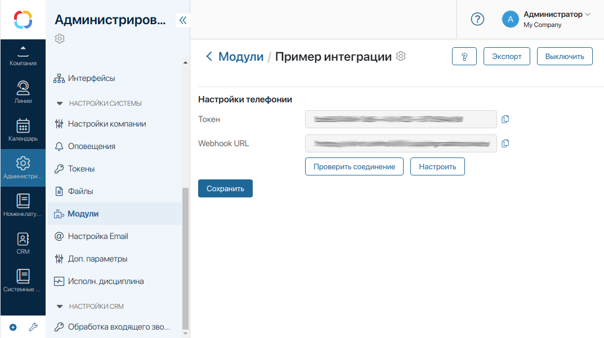
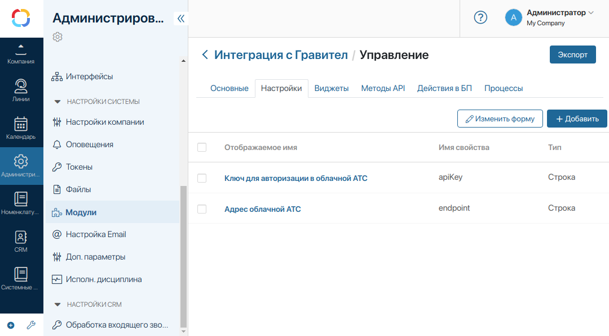
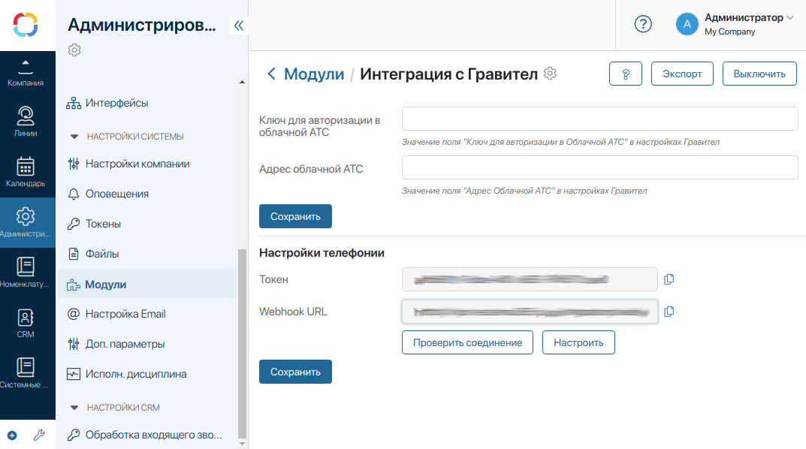
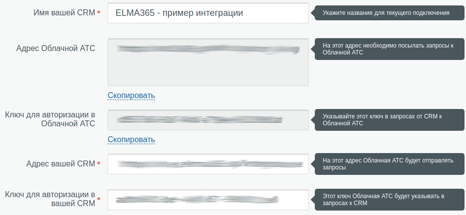
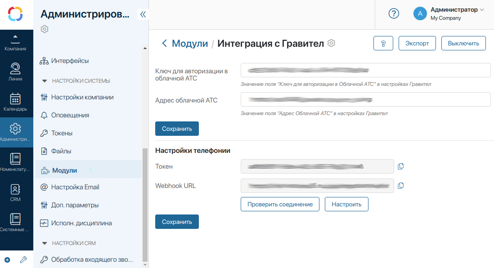
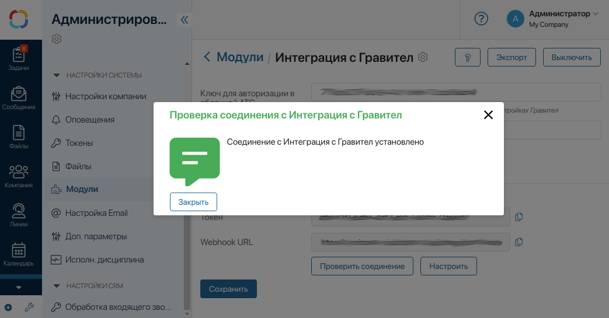

Для того чтобы пользовательский модуль реализовывал подключение к телефонии, необходимо в Скриптах модуля внести следующие функции:
// Проверить соединение к телефонии.
Вызывается по нажатию на кнопку Проверить соединение на странице модуля
async function VoipTestConnection(): Promise<VoipTestConnectionResult>
// Обработать запрос от провайдера IP-телефонии
async function VoipParseWebhookRequest(request: FetchRequest): Promise<VoipWebhookParseResult>
// Получить список пользователей IP-телефонии.
Используется для сопоставления пользователей по нажатию кнопки Настроить
на странице модуля
async function VoipGetMembers(): Promise<VoipMember[]>
// Сгенерировать звонок
async function VoipGenerateCall(srcPhone: string, dstPhone: string): Promise<void>
// Получить ссылку на запись звонка
async function VoipGetCallLink(callData: any): Promise<string>
// Вызывать автоматически при изменении ссылки на webhook, например при обновлении токена
// Эту функцию не обязательно реализовывать
async function VoipOnWebhookUpdated(webhookUrl: string): Promise<void>
Сохраните и опубликуйте скрипты, после чего на странице модуля появится форма Настройки телефонии.

Чтобы провайдер IP-телефонии мог отправлять запросы в ваш модуль ELMA365, необходимо в панели администрирования провайдера IP-телефонии заполнить адрес обратной связи (Webhook). Этот адрес указан в поле Webhook URL на странице модуля. Чтобы скопировать адрес, нажмите на значок рядом с текстовым полем. Некоторые провайдеры телефонии также требуют заполнить отдельное поле для ключа авторизации в CRM – значение этого ключа указано в поле Токен на странице модуля.
Перед созданием пользовательского модуля интеграции убедитесь, что в каталоге ELMA365 Store нет нужного вам модуля. На данный момент в каталоге доступны следующие модули:
- «Телефония Гравител»;
- «Телефония SIPNET»;
- «Телефония Zadarma»;
- «Телефония Mango»;
- «Телефония Sipuni»;
- «Телефония Билайн»;
- «Телефония Asterisk».
Обратите внимание, система телефонии Asterisk доступна только для ELMA365 On-Premises.
Далее приведены заготовка интеграции и пример на основе интеграции провайдера IP-телефонии Гравител.
Заготовка интеграции
Чтобы создать модуль интеграции с телефонией, выполните следующие действия:
- Перейдите в Администрирование > Модули.
- Создайте новый пользовательский модуль. Для этого:
- Нажмите кнопку +Модуль.
- В открывшемся окне выберите опцию Создать.
- Введите название и описание модуля.
- Нажмите Создать.
- В настройках модуля перейдите на вкладку Методы API и нажмите кнопку Редактировать. На открывшейся странице перейдите на вкладку Скрипты.
- Вставьте код-заготовку для функций, необходимых для реализации интеграции с телефонией:
// Проверить соединение к телефонии.
Вызывается по нажатию на кнопку Проверить соединение на странице модуля
async function VoipTestConnection(): Promise<VoipTestConnectionResult> {
return {
success: false,
failReason: 'Функция проверки соединения не реализована.',
};
}
// Обработать запрос от провайдера IP-телефонии
async function VoipParseWebhookRequest(request: FetchRequest): Promise<VoipWebhookParseResult> {
return {
response: new HttpResponse()
.status(400)
.content('Hello, world!'),
};
}
// Получить список пользователей IP-телефонии.
Используется для сопоставления пользователей по нажатию кнопки Настроить
на странице модуля
async function VoipGetMembers(): Promise<VoipMember[]> {
throw new Error('Функция не реализована.');
}
// Сгенерировать звонок
async function VoipGenerateCall(srcPhone: string, dstPhone: string): Promise<void> {
throw new Error('Функция не реализована.');
}
// Получить ссылку на запись звонка
async function VoipGetCallLink(callData: any): Promise<string> {
throw new Error('Функция не реализована.');
}
- Нажмите кнопки Сохранить и Опубликовать в верхнем левом углу страницы.
- Если всё было сделано верно, на странице модуля будет отображаться раздел Настройки телефонии.
Пример интеграции с Гравител
- Создайте заготовку модуля как описано выше.
- В настройках модуля перейдите на вкладку Настройки и создайте два строковых поля с именами Ключ для авторизации в облачной АТС и Адрес облачной АТС. В качестве названия свойства укажите apiKey и endpoint соответственно. В этих полях будут храниться настройки для подключения к Гравител со стороны модуля:

- Вернитесь на страницу модуля — на ней появятся добавленные в предыдущем пункте поля:

- Перейдите в панель управления Гравител, зайдите в раздел Настройки и выберите вкладку Интеграция с CRM. Нажмите на блок Добавить в конце списка.
- На открывшейся странице заполните поля Имя вашей CRM, Адрес вашей CRM и Ключ для авторизации в вашей CRM. Для этого скопируйте значения полей Webhook URL и Токен со страницы модуля.

- Скопируйте со страницы настройки интеграции в Гравител значения полей Ключ для авторизации в Облачной АТС и Адрес Облачной АТС и вставьте в соответствующие поля на странице настройки модуля. Нажмите Сохранить. Также не забудьте сохранить интеграцию в Гравител.

- Перейдите в редактор скриптов (Настройки модуля > Методы API > Скрипты) и добавьте в начало файла следующий код:
// Загрузить значение поля Ключ для авторизации в облачной АТС из настроек модуля
function getApiKey() {
const apiKey = Namespace.params.data.apiKey;
if (!apiKey) {
throw new Error('invalid API key');
}
return apiKey;
}
// Загрузить значение поля Адрес облачной АТС из настроек модуля
function getEndpoint() {
const endpoint = Namespace.params.data.endpoint;
if (!endpoint) {
throw new Error('invalid endpoint URL');
}
return endpoint;
}
// Выполнить запрос к Гравител
async function fetchEndpoint(command: string, body: Object = {}): Promise<FetchResponse> {
return fetch(getEndpoint(), {
method: 'POST',
headers: {
'Content-Type': 'application/json',
},
body: JSON.stringify({
cmd: command,
token: getApiKey(),
...body,
}),
});
}
// Распарсить контент с типом application/x-www-form-urlencoded
function parseUrlEncoded(body: string): Record<string, string> {
const result: Record<string, string> = {};
for (const pair of body.split('&')) {
const keyValue = pair.split('=');
if (keyValue.length === 2) {
const key = decodeURIComponent(keyValue[0]);
const value = decodeURIComponent(keyValue[1]);
result[key] = value;
}
}
return result;
}
// Сообщение от Гравител
interface GravitelWebhookRequest {
cmd: string; // Тип операции
type: string; // Тип события, связанного со звонком
phone: string; // Номер телефона клиента (в формате E.164)
ext?: string; // Внутренний номер пользователя облачной АТС, если есть
}
// Данные, передающиеся с командой history
interface GravitelWebhookHistoryCommand extends GravitelWebhookRequest {
duration: string; // Общая длительность звонка в секундах
callid: string; // Уникальный id звонка
link?: string; // Ссылка на запись звонка, если она включена в Облачной АТС
status: string; // Статус входящего или исходящего звонка
}
// Данные, которые сохраняются с каждым звонком
interface GravitelCallData {
id: string;
link: string;
}
// Сконвертировать статус звонка Гравител в статус звонка ELMA365
function toCallDisposition(status: string): VoipCallDisposition {
switch (status) {
case 'Success':
return VoipCallDisposition.Answered;
case 'Busy':
return VoipCallDisposition.Busy;
case 'Missed':
return VoipCallDisposition.Cancel;
case 'NotAvailable':
return VoipCallDisposition.NoAnswer;
case 'NotAllowed':
default:
return VoipCallDisposition.Unknown;
}
}
- Добавьте или замените функцию VoipTestConnection, которая используется для проверки соединения с телефонией:
// Проверить соединение к телефонии.
Вызывается по нажатию на кнопку Проверить соединение на странице модуля
async function VoipTestConnection(): Promise<VoipTestConnectionResult> {
try {
// Выполняем команду на получение списка пользователей телефонии
// Можно выбрать любую другую команду для тестирования
const response = await fetchEndpoint('accounts');
const message = await response.json();
if (response.status !== 200) {
throw new Error(`${response.status} ${response.statusText}: ${message.error}`);
}
return { success: true };
} catch (e) {
return {
success: false,
failReason: e.message,
};
}
}
- Сохраните и опубликуйте скрипты, после чего перейдите на страницу модуля и нажмите кнопку Проверить соединение. Появится сообщение об успешном подключении к телефонии.

Если вы видите ошибку при проверке соединения, проверьте:
- корректность заполнения настроек подключения к Гравител на странице модуля и в панели управления Гравител. Например, ошибка Invalid token означает неверно заполненное поле Токен;
- успешность сохранения и публикации скриптов;
- статус вашего аккаунта в Гравител.
- Для обработки запроса от Гравител вызывается функция VoipParseWebhookRequest. В ней происходит парсинг данных из тела HTTP-запроса их конвертация в формат ELMA365.
// Обработать запрос от провайдера IP-телефонии
async function VoipParseWebhookRequest(request: FetchRequest): Promise<VoipWebhookParseResult> {
try {
const headers = request.headers;
const contentType = headers ? headers['Content-Type'] : undefined;
if (contentType !== 'application/x-www-form-urlencoded') {
throw new Error(`Expected Content-Type to be "application/x-www-form-urlencoded" (got: "${contentType}"`);
}
if (typeof request.body !== 'string') {
throw new Error('Expected request body to be string')
}
let event: VoipWebhookRequest | undefined;
let callRecord: VoipCallRecord | undefined;
let response: HttpResponse | undefined;
const data = <GravitelWebhookRequest><unknown> parseUrlEncoded(request.body);
switch (data.cmd) {
case 'event': {
// Облачная АТС отправляет в вашу CRM уведомления о событиях входящих звонков пользователям:
появлении, принятии или завершении звонка. Команда может быть использована для
отображения всплывающей карточки клиента в интерфейсе CRM
const dstPhone = data.ext ?? '';
switch (data.type) {
case 'INCOMING': {
// Пришёл входящий звонок. В это время у менеджера должен начать звонить телефон
event = {
event: VoipWebhookEvent.NotifyStart,
direction: VoipCallDirection.In,
dstPhone: dstPhone,
srcPhone: data.phone,
disposition: VoipCallDisposition.Unknown,
};
} break;
case 'ACCEPTED': {
// Звонок успешно принят, т. е. менеджер снял трубку. В этот момент можно убрать
всплывающую карточку контакта в CRM
event = {
event: VoipWebhookEvent.NotifyAnswer,
direction: VoipCallDirection.In,
dstPhone: dstPhone,
srcPhone: data.phone,
disposition: VoipCallDisposition.Unknown,
}
} break;
case 'COMPLETED': {
// Звонок успешно завершён, т. е. менеджер или клиент положили трубку после разговора
event = {
event: VoipWebhookEvent.NotifyEnd,
direction: VoipCallDirection.In,
dstPhone: dstPhone,
srcPhone: data.phone,
disposition: VoipCallDisposition.Unknown,
}
} break;
case 'CANCELLED': {
// Звонок сброшен, т.е. клиент не дождался пока менеджер снимет трубку.
Либо, если это был звонок сразу на группу менеджеров, на звонок мог ответить кто-то ещё
event = {
event: VoipWebhookEvent.NotifyEnd,
direction: VoipCallDirection.In,
dstPhone: dstPhone,
srcPhone: data.phone,
disposition: VoipCallDisposition.Cancel,
}
} break;
case 'OUTGOING': {
// Менеджер совершает исходящий звонок.
В это время облачная АТС пытается дозвониться до клиента
event = {
event: VoipWebhookEvent.NotifyStart,
direction: VoipCallDirection.Out,
dstPhone: dstPhone,
srcPhone: data.phone,
disposition: VoipCallDisposition.Unknown,
}
} break;
default: throw new Error(`Unknown event type "${data.type}"`)
}
} break;
case 'history': {
// После успешного звонка в CRM отправляется запрос
с данными о звонке и ссылкой на запись разговора
// Команда может быть использована для сохранения
в данных ваших клиентов истории и записей входящих и исходящих звонков
const cmd = <GravitelWebhookHistoryCommand> data;
callRecord = {
srcPhone: cmd.phone,
dstPhone: cmd.ext ?? '',
direction: cmd.type === 'out' ? VoipCallDirection.Out : VoipCallDirection.In,
duration: parseInt(cmd.duration),
// Данные из этого поля будут доступны в функции VoipGetCallLink
call: <GravitelCallData>{
link: cmd.link,
id: cmd.callid,
},
disposition: toCallDisposition(cmd.status),
}
} break;
}
return {
event: event,
callRecord: callRecord,
response: response,
};
} catch (e) {
return {
response: new HttpResponse()
.status(400)
.content(JSON.stringify({
error: e.message ?? 'internal error',
}))
};
}
}
- Получение пользователей провайдера телефонии происходит в функции VoipGetMembers. Данные из функции используются в виджете сопоставления пользователей провайдера телефонии и пользователей ELMA365, доступном по нажатию на кнопку Настроить на странице пользовательского модуля.
// Получить список пользователей от провайдера IP телефонии
// Это внутренние пользователи - внутренние номера/SIPID,
нужно для сопоставления между пользователями IP-провайдера и пользователями ELMA365
async function VoipGetMembers(): Promise<VoipMember[]> {
const response = await fetchEndpoint('accounts');
if (response.status !== 200) {
throw new Error(`received error response ${response.status}: ${response.statusText}`);
}
interface GravitelVoipUser {
name: string;
ext: string;
}
const voipUsers = <GravitelVoipUser[]> (await response.json());
return voipUsers.map(user => ({
id: user.ext,
label: user.name,
}));
}
- Функция VoipGenerateCall вызывается, когда совершается звонок по телефону из интерфейса ELMA365.
// Сгенерировать звонок
async function VoipGenerateCall(srcPhone: string, dstPhone: string): Promise<void> {
const response = await fetchEndpoint('makeCall', {
phone: dstPhone,
user: srcPhone,
});
if (response.status !== 200) {
throw new Error(`received error response ${response.status}: ${response.statusText}`);
}
}
- Функция VoipGetCallLink используется для получения ссылки на запись разговора. В качестве аргумента функции передаются данные поля call интерфейса VoipCallRecord (заполняется в VoipParseWebhookRequest).
// Получить ссылку на запись разговора
async function VoipGetCallLink(callData: GravitelCallData): Promise<string> {
return callData.link;
}
- Сохраните и опубликуйте скрипты. Теперь интеграция с Гравител полностью функционирует.